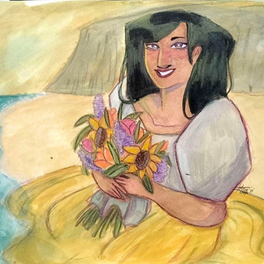
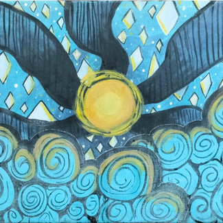
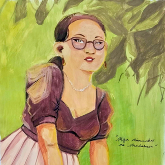
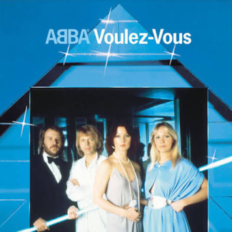
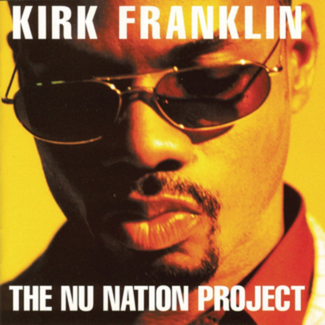
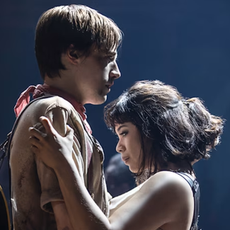
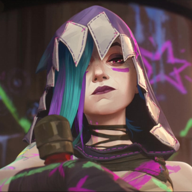
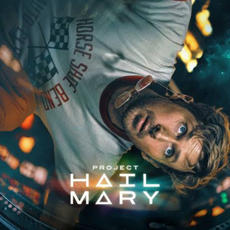

ILLUSTRATION AND VISUAL ARTS



I have been drawing since I was a little kid. Because of that, I grew up as a very artsy person! I started out as a traditional artist, and was introduced to digital arts at a very early age. Now, I try and practice both.
MUSIC



I enjoy both contemporary and worship songs. My favorite artists are Tiffany Hudson, Kirk Franklin, Cece Winans. I also love Abba, Eraserheads, Ben&Ben and Noah Kahan to name a few.
FILM AND ANIMATION



I believe that movies are a reflection of a person's soul. What kind of films and shows you enjoy tell a lot about who you are as a person. Recently, I have enjoyed the shows: Project Hail Mary, Hadestown, Arcane, and Steven Universe.